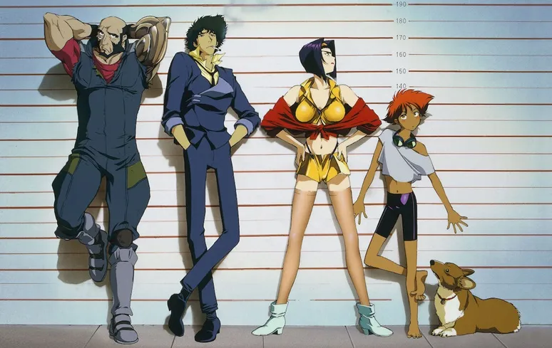
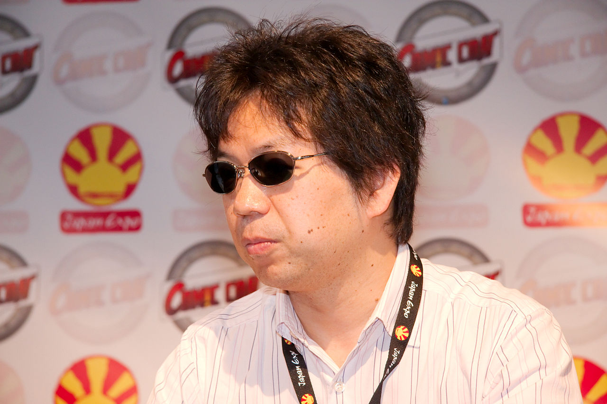
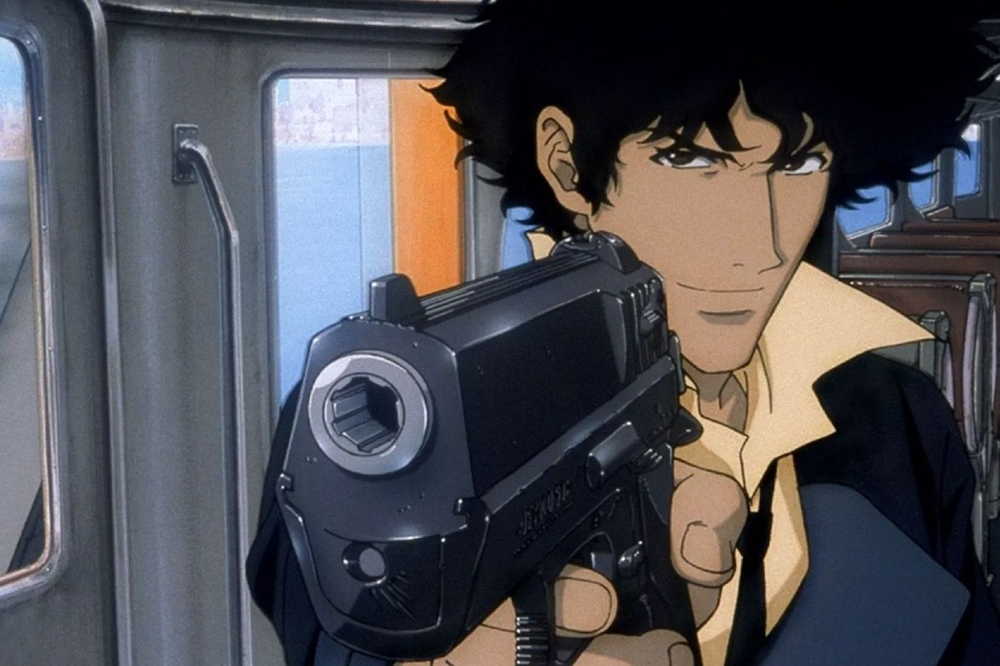
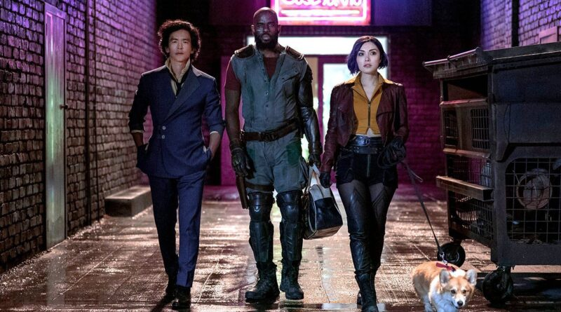

Cowboy Bebop
Resumo
Cowboy Bebop (カウボーイビバップ Kaubōi Bibappu) é uma aclamada série japonesa, de gênero space western. Produzida e dirigida por Shinichiro Watanabe, a série se passa no ano de 2071 e é centrada na vida de uma tripulação de caçadores de recompensas espaciais. O anime aborda questões não resolvidas do passado dos protagonistas, explorando temas como existencialismo, tédio, degradação ambiental e a solidão.
Cowboy Bebop recebeu ampla aclamação crítica e comercial, tanto no Japão quanto internacionalmente. O trabalho foi consagrado com inúmeros prêmios no campo da animação e da ficção científica e tem sido reverenciado por seu estilo, personagens, enredo, dublagem e trilha sonora, focada no gênero Jazz.Ao longo dos anos, a série se estabeleceu como uma obra-prima da animação japonesa, sendo considerada por muitos críticos um dos melhores animes de todos os tempos. Sobre Bebop, o escritor e crítico cultural Kyle Mills, escreveu:
Independentemente da mídia, seja televisão com atores, filmes ou animações, Cowboy Bebop é um dos mais finos exemplos de narrativa já criados.
O anime estreou no Japão na TV Tokyo de 3 de abril a 26 de junho de 1998, mas devido ao conteúdo violento da série, apenas 12 dos 26 episódios produzidos foram inicialmente ao ar. A totalidade dos episódios foi posteriormente transmitida no canal por satélite WOWOW.
Uma banda de jazz, denominada Seatbelts foi formada exclusivamente para compor a trilha de Bebop. O sucesso da trilha foi tão grande que a banda continuou se reunindo e fazendo aparições esporádicas. Além disso, dois mangás foram baseados do anime, além de um filme intitulado Cowboy Bebop, O Filme. Mais recentemente uma série live action de Bebop foi transmitida pela Netflix.
Enredo
Em 2021, a explosão acidental de um portão experimental, dispositivo que permite viagens no hiperespaço, danifica gravemente a Lua, causando o deslocamento de um grupo de asteroides e meteoritos que bombardeiam a superfície do planeta Terra, exterminando grande parte da população. Os sobreviventes, portanto, abandonam o planeta para colonizar novos sistemas habitáveis: Marte, Vênus, os discos de detritos e os satélites de Júpiter.
Em 2071, todo o sistema solar tornou-se acessível para viagens no hiperespaço graças aos portões, Marte tornou-se o planeta central do novo desenvolvimento humano e os novos cartéis do crime organizado interplanetário, sobretudo o Red Dragon Syndicate, exercem sua influência dentro dos governos e sobre a Inter Solar System Police (ISSP), a polícia do sistema solar, limitando a sua eficácia no combate ao crime. Para fazer frente à ameaça de fugitivos, terroristas, traficantes de drogas e outros criminosos perigosos, foi estabelecido um sistema de "recompensa" semelhante ao usado no velho oeste; os novos caçadores de recompensas do sistema solar são, portanto, freqüentemente chamados de "cowboys".
Spike Spiegel, um ex-afiliado da Red Dragon, e seu parceiro Jet Black, um ex-investigador da ISSP, são dois caçadores de recompensas que viajam pelo sistema solar a bordo da nave espacial de Jet: o Bebop. Ao longo das perseguições, unem-se a eles três novos companheiros: o cachorro hiperinteligente da raça Corgi, Ein, a trapaceira ex-funcionária de cassinos perseguida pelos credores, Faye Valentine e a excêntrica e brilhante hacker pré-adolescente conhecida como Radical Edward.
Ambientação
Vários críticos chamaram atenção para a variedade de gêneros nos quais o trabalho se ramifica, incluindo a estudiosa de ficção científica Michelle Onley Pirkle, que escreveu: "a série tenta uma nova abordagem para o gênero, não criando imagens e sons inovadores, mas variando" livremente " ao “remixar” ou adaptar as imagens e sons de outros gêneros familiares de forma dinâmica". A estudiosa enfatiza que Cowboy Bebop "brinca" com uma variedade de citações e referências diferentes, produzindo um efeito de déjà vu no público ao reconectar referências intertextuais à sua riqueza de conhecimento e memórias. O próprio Watanabe afirma frequentemente que dedicou sua carreira à criação de animes não convencionais, declaração que se reflete no sistema solar apresentada em Cowboy Bebop "um terço de diáspora chinesa e dois terços de velho oeste", com uma justaposição de diferentes gêneros e estilos: xamanismo, kung fu, elementos de drama épico, de comédia pastelão e ação característica do autor John Woo. Esses recursos levam a série para muito além da ficção científica tradicional, fazendo com que muitos fãs cunhassem o termo "western espacial" para descrevê-la.
O cenário é baseado no multiculturalismo da sociedade contemporânea, diferenciando-se dos elementos típicos da ficção científica japonesa, como alienígenas e robôs gigantes. Na série, de fato, muitos planetas e estações espaciais foram modelados à imagem da Terra: as ruas de objetos celestes, como Ganimedes, lembram cidades portuárias modernas, enquanto Marte está cheio de centros comerciais, parques temáticos, cassinos e megacidades. Elementos futuristas e modernos são habilmente combinados "permitindo ao espectador conectar-se facilmente ao mundo de Cowboy Bebop".
Eu queria criar um mundo futurista, mas um mundo verdadeiramente habitado por pessoas. Apenas os personagens dos filmes poderiam ter vivido nos mundos descritos em 'Star Wars' e outros filmes de ficção científica. Eu queria criar um mundo onde as pessoas vivessem e respirassem. Mesmo que seja apenas para a foto de uma calçada deserta, nela devevia haver pontas de cigarro ou outros vestígios visíveis de pessoas caminhando sobre ela.
Escreveu: Shinichiro Watanabe, criador do anime.
Referências
As referências feitas em Cowboy Bebop são múltiplas, abrangendo sobretudo obras consagradas de ficção científica, filmes de spaghetti western e inúmeras alusões a temas musicais. Sobre isto, a série conta com três coadjuvantes fixos, chamados de Antônio, Carlos e Jobim, em clara homenagem ao maestro brasileiro Tom Jobim, nome da Bossa Nova. No episódio "Cowboy Funk" percebe-se uma referência musical à trilha sonora dos filmes de velho oeste feitas por Ennio Morricone. Assobios durante a música e guitarras usadas para esse estilo musical são características únicas de suas composições.
A maior parte das referências pertence, contudo, à cultura americana: do cinema, incluindo filmes mobster e de velho oeste à liberdade do jazz da década de 1940 (Bebop). Também há influências dos filmes de Kung Fu das décadas de 1960 e 1970. Spike Spiegel é praticante da arte marcial Jeet Kune Do, criada e difundida por Bruce Lee. O nome do procurado no segundo episódio é Abdul Hakim, nome do famoso personagem de Game of Death estrelado por Lee e Kareem Abdul-Jabbar, a quem o vilão faz referência.
Os designs dos protagonistas da série homenageiam claramente os personagens de Lupin III, outro clássico da animação japonesa. (O estilo e cores de roupa de Faye é o mesmo da personagem Fujiko. A influência de Jet veio do parceiro de Lupin Jigen. Já Spike foi baseado no próprio Lupin, enquanto o visual de Vicious teve como base o Capitão Harlock, protagonista de outra famosa série).
A nave MONO de Spike Swordfish II foi inspirada na Fairey Swordfish, um bombardeiro britânico da Segunda Guerra Mundial. O episódio "Pierrot Le Fou", cujo título faz referência ao filme homônimo de Jean-Luc Godard, foi influenciado pela revista de Alan Moore, V de Vingança. Muitos dos episódios de Cowboy Bebop carregam cores e estilo de outras obras, com influência especial do gênero film noir.
Entre as referências mais explícitas podemos listar ainda 2001: A Space Odyssey, The Crow, John Woo, Alien, Star Trek, Dirty Harry, Meu Ódio Será Tua Herança e Shaft.
Lista de Episódios
A série possui 26 episódios, chamados de "sessões" (alusão direta às Jam sessions de Jazz). Muitas dessas sessões são explicitamente nomes de canções consagradas, sobretudo do Rock e do Blues, além de uma referência ao filme de Jean-Luc Godard, Pierrot le fou. Originalmente o filme de Cowboy Bebop recebeu o subtítulo de "Knockin' On Heaven's Door", nome do famoso hit de Bob Dylan. Contudo a canção estava sob a licença de copyright, então a Columbia Tristar resolveu lançar o longa em outros países apenas com o título de Cowboy Bebop - O Filme.
Lista dos episódios em inglês, japonês (com romaji, a transcrição da escrita japonesa para o alfabeto latino) e quando necessário traduzido para o português quando o nome do episódio não estiver em katakana (escrita usada na língua japonesa para marcar palavras estrangeiras, entre outras funções):
- Asteroid Blues (アステロイド・ブルース, Asuteroido Burūsu)
- Cachorro de Rua Strut ou Cachorro de Rua Pomposo (野良犬のストラット, Norainu no Sutoratto) - Em inglês: Stray Dog Strut, trocadilho com Stray Cat Strut, hit dos Stray Cats.
- Honky Tonk Women (ホンキィ・トンク・ウィメン, Honkī Tonku Wimen) - Canção da banda de rock britânica Rolling Stones.
- Gateway Shuffle (ゲイトウェイ・シャッフル, Geitowei Shaffuru) - Harlem Shuffle é uma canção dos Rolling Stones, de 1986.
- Balada dos Anjos Caídos (堕天使たちのバラッド, Datenshi-tachi no Baraddo)
- Simpatia pelo Diabo (悪魔を憐れむ歌, Akuma o Awaremu Uta) - Em inglês: Sympathy for the Devil, outro clássico dos Rolling Stones.
- Heavy Metal Queen (ヘヴィ・メタル・クイーン, Hevi Metaru Kuīn) - Título da canção da banda alemã Trance, de 1983.
- Waltz for Venus (ワルツ・フォー・ヴィーナス, Warutsu fō Vīnasu) - Trocadilho com Waltz for Debbie, famoso standard de jazz.
- Jamming with Edward (ジャミング・ウィズ・エドワード, Jamingu Wizu Edowādo) - Álbum dos Rolling Stones de 1972.
- Elegia de Ganimedes (ガニメデ慕情, Ganimede Bojō)
- Toys in the Attic (Heavy Rock da Noite Escura) (闇夜のヘヴィ・ロック, Yamiyo no Hevi Rokku) - Toys in the Attic é uma canção e álbum da banda estadunidense Aerosmith.
- Jupiter Jazz (Parte 1) (ジュピター・ジャズ(前編), Jupitā Jazu (Zenpen))
- Jupiter Jazz (Parte 2) (ジュピター・ジャズ(後編), Jupitā Jazu (Kōhen))
- Bohemian Rhapsody (ボヘミアン・ラプソディ, Bohemian Rapusodi) - Canção da banda britânica Queen.
- My Funny Valentine (マイ・ファニー・ヴァレンタイン, Mai Fanī Varentain) - Canção do musical Babes in Arms (1937), composta por Richard Rodgers e Lorenz Hart.
- Black Dog Serenade (ブラック・ドッグ・セレナーデ, Burakku Doggu Serenāde)
- Mushroom Samba (マッシュルーム・サンバ, Masshurūmu Sanba)
- Speak Like a Child (スピーク・ライク・ア・チャイルド, Supīku Raiku A Chairudo) - Música de Herbie Hancock.
- Wild Horses (ワイルド・ホーセス, Wairudo Hōsesu) - Música dos Rolling Stones.
- Pierrot le Fou (O Demônio das Onze Horas) (道化師の鎮魂歌, Dōkeshi no Chinkonka) - Pierrot le Fou é o título de um filme de Jean-Luc Goddard.
- Boogie Woogie Feng Shui (ブギ・ウギ・フンシェイ, Bugi Ugi Funshei)- Boogie Woogie é um estilo musical.
- Cowboy Funk (カウボーイ・ファンク, Kaubōi Fanku)
- Brain Scratch (ブレイン・スクラッチ, Burein Sukuratchi) - Referência à música "Brain Damage" da banda britânica Pink Floyd.
- Hard Luck Woman (ハード・ラック・ウーマン, Hādo Rakku Ūman) - Música da banda estadunidense Kiss.
- The Real Folk Blues (Parte 1) (ザ・リアル・フォークブルース(前編), Za Riaru Fōku Burūsu (Zenpen)) - The Real Folk Blues é o nome de uma série de álbuns lançados entre 1965 e 1969, com compilação de músicas de artistas de blues como John Lee Hooker, Howlin' Wolf, Muddy Waters, e Sonny Boy Williamson II.
- The Real Folk Blues (Parte 2) (ザ・リアル・フォークブルース(後編), Za Riaru Fōku Burūsu (Kōhen))
Dubladores
Japão
- Spike Spiegel - Koichi Yamadera.
- Jet Black - Unsho Ishizuka.
- Faye Valentine - Megumi Hayashibara.
- Vicious - Norio Wakamoto.
- Júlia - Gara Takashima.
Brasil
- Spike Spiegel - Guilherme Briggs.
- Jet Black - Mauro Ramos.
- Faye Valentine - Miriam Ficher.
- Ed - Luisa Palomanes (filme) e Letícia Celini (anime).
Live-action
No dia 16 de Janeiro de 2009, Keanu Reeves foi confirmado no papel de Spike. A empresa que produziria o filme seria a 3 Arts, Shinichiro Watanabe, diretor da série, e Keiko Nobumoto, roteirista da série, seriam os produtores associados. Porém o projeto foi engavetado.[carece de fontes] Em julho de 2016 foi anunciada a série para TV em live-action. Uma parceria firmada entre o Tomorrow Studios, a ITV e Marty Adelstein permitiram a existência da série que teve o estúdio que produziu o anime original como produtor executivo. [carece de fontes]
Christopher Yost, o roteirista de Thor: Ragnarok e Star Wars Rebels foi o responsável pelo roteiro da série que foi lançada em 19 de novembro de 2021.
| Personagem | Ator |
|---|---|
| Spike Spiegel | John Cho |
| Jet Black | Mustafa Shakir |
| Faye Valentine | Daniella Pineda |
| Vicious | Alex Hassel |
| Julia | Elena Satine |